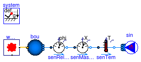
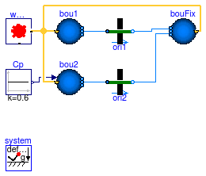
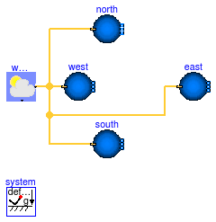
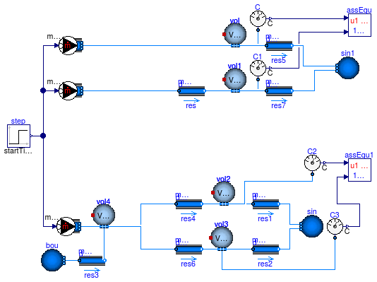

Collection of models that illustrate model use and test models
Information
This package contains examples for the use of models that can be found in
Buildings.Fluid.Sources.
Extends from Modelica.Icons.ExamplesPackage (Icon for packages containing runnable examples).
Package Content
Test model for source and sink with outside weather data

Information
Extends from Modelica.Icons.Example (Icon for runnable examples).
Modelica definition
model Outside
"Test model for source and sink with outside weather data"
extends Modelica.Icons.Example;
package Medium =
Buildings.Media.Air "Medium model for air";
Buildings.Fluid.Sources.Outside bou(
redeclare package Medium = Medium, nPorts=
1)
"Model with outside conditions";
Buildings.BoundaryConditions.WeatherData.ReaderTMY3 weaDat(filNam=
"modelica://Buildings/Resources/weatherdata/USA_IL_Chicago-OHare.Intl.AP.725300_TMY3.mos");
MassFlowSource_T sin(
redeclare package Medium = Medium, m_flow=-1,
nPorts=1)
"Sink";
Sensors.TemperatureTwoPort senTem(
redeclare package Medium = Medium,
m_flow_nominal=1)
"Temperature sensor";
Sensors.RelativeHumidityTwoPort senRelHum(
redeclare package Medium = Medium,
m_flow_nominal=1);
Sensors.MassFractionTwoPort senMasFra(
redeclare package Medium = Medium,
m_flow_nominal=1)
"Sensor for mass fraction of water";
equation
connect(weaDat.weaBus, bou.weaBus);
connect(senTem.port_b, sin.ports[1]);
connect(senRelHum.port_a, bou.ports[1]);
connect(senRelHum.port_b, senMasFra.port_a);
connect(senMasFra.port_b, senTem.port_a);
end Outside;
Test model for source and sink with outside weather data and wind pressure

Information
This model demonstrates the use of a source for ambient temperature, pressure and
species concentration.
The models bou1 and bou2 compute the ambient pressure
based on the weather file and the wind pressure.
The model bou1 uses a parameter for the wind pressure coefficient,
whereas bou2 uses the wind pressure coefficient from its input port.
The model bouFix does not compute any wind pressure.
Adding the wind pressure to the models on the left-hand side induces a mass flow
rate through the orifice models ori1 and ori2.
Since both source models use the same constant wind pressure coefficient, the
mass flow rate through the orifice model is the same.
In more realistic applications, the constant source Cp would be
replaced by a model that computes a wind pressure coefficient that takes into
account the wind direction relative to the building.
Extends from Modelica.Icons.Example (Icon for runnable examples).
Modelica definition
model Outside_Cp
"Test model for source and sink with outside weather data and wind pressure"
extends Modelica.Icons.Example;
package Medium =
Buildings.Media.Air "Medium model for air";
Buildings.Fluid.Sources.Outside_Cp bou1(
redeclare package Medium = Medium,
nPorts=1,
Cp=0.6)
"Model with outside conditions";
Buildings.BoundaryConditions.WeatherData.ReaderTMY3 weaDat(
filNam="modelica://Buildings/Resources/weatherdata/USA_CA_San.Francisco.Intl.AP.724940_TMY3.mos");
Buildings.Fluid.Sources.Outside bouFix(
redeclare package Medium = Medium,
nPorts=2)
"Model with outside conditions";
Modelica.Blocks.Sources.Constant Cp(k=0.6)
"Constant value for Cp (used to demonstrate input connector)";
Buildings.Airflow.Multizone.Orifice ori1(A=0.1,
redeclare package Medium =
Medium)
"Orifice";
Buildings.Fluid.Sources.Outside_Cp bou2(
redeclare package Medium = Medium,
nPorts=1,
use_Cp_in=true)
"Model with outside conditions";
Buildings.Airflow.Multizone.Orifice ori2(A=0.1,
redeclare package Medium =
Medium)
"Orifice";
equation
connect(weaDat.weaBus, bou1.weaBus);
connect(bou1.ports[1], ori1.port_a);
connect(ori1.port_b, bouFix.ports[1]);
connect(weaDat.weaBus, bouFix.weaBus);
connect(bou2.Cp_in, Cp.y);
connect(bou2.ports[1], ori2.port_a);
connect(ori2.port_b, bouFix.ports[2]);
connect(weaDat.weaBus, bou2.weaBus);
end Outside_Cp;
Test model for source and sink with outside weather data and wind pressure

Information
This model demonstrates the use of a source for ambient conditions that computes
the wind pressure on a facade of a low-rise building.
Weather data are used for San Francisco, for a period of a week
where the wind blows primarily from North-West.
The plot shows that the wind pressure on the north- and west-facing
facade is positive,
whereas it is negative for the south- and east-facing facades.
Extends from Modelica.Icons.Example (Icon for runnable examples).
Modelica definition
model Outside_CpLowRise
"Test model for source and sink with outside weather data and wind pressure"
extends Modelica.Icons.Example;
package Medium =
Buildings.Media.Air "Medium model for air";
Buildings.Fluid.Sources.Outside_CpLowRise west(
redeclare package Medium = Medium,
s=5,
azi=Buildings.Types.Azimuth.W,
Cp0=0.6)
"Model with outside conditions";
Buildings.BoundaryConditions.WeatherData.ReaderTMY3 weaDat(
filNam="modelica://Buildings/Resources/weatherdata/USA_CA_San.Francisco.Intl.AP.724940_TMY3.mos");
Buildings.Fluid.Sources.Outside_CpLowRise north(
redeclare package Medium = Medium,
s=1/5,
azi=Buildings.Types.Azimuth.N,
Cp0=0.6)
"Model with outside conditions";
Buildings.Fluid.Sources.Outside_CpLowRise south(
redeclare package Medium = Medium,
s=1/5,
azi=Buildings.Types.Azimuth.S,
Cp0=0.6)
"Model with outside conditions";
Buildings.Fluid.Sources.Outside_CpLowRise east(
redeclare package Medium = Medium,
s=5,
azi=Buildings.Types.Azimuth.E,
Cp0=0.6)
"Model with outside conditions";
equation
connect(weaDat.weaBus, west.weaBus);
connect(weaDat.weaBus, north.weaBus);
connect(weaDat.weaBus, south.weaBus);
connect(weaDat.weaBus, east.weaBus);
end Outside_CpLowRise;

Information
This model demonstrates the use of trace substances that are added
to a volume of air.
The source is a step function of 2 kg/s CO2 from t=0 second
to t=0.5 second.
The sensors C and C1 measure the same concentration that initially increases
and then remains constant as there is no flow through the volumes vol and vol1.
The sensors
C2 and
C3 first meaure an increase in concentration, which then decays to zero
as there is a mass flow rate with zero CO2 from the source bou to the sink sin.
Extends from Modelica.Icons.Example (Icon for runnable examples).
Modelica definition
model TraceSubstancesFlowSource
extends Modelica.Icons.Example;
package Medium =
Buildings.Media.Air(extraPropertiesNames={"CO2"});
MixingVolumes.MixingVolume vol(
redeclare package Medium = Medium,
V=100,
m_flow_nominal=1,
nPorts=3,
energyDynamics=Modelica.Fluid.Types.Dynamics.FixedInitial)
"Mixing volume";
Sources.TraceSubstancesFlowSource sou(
redeclare package Medium = Medium,
use_m_flow_in=true,
nPorts=1);
Modelica.Blocks.Sources.Step step( startTime=0.5,
height=-2,
offset=2);
FixedResistances.FixedResistanceDpM res(
redeclare package Medium = Medium,
m_flow_nominal=1,
dp_nominal=1)
"Resistance, used to check if species are transported between ports";
MixingVolumes.MixingVolume vol1(
redeclare package Medium = Medium,
V=100,
m_flow_nominal=1,
nPorts=3,
energyDynamics=Modelica.Fluid.Types.Dynamics.FixedInitial)
"Mixing volume";
Sources.TraceSubstancesFlowSource sou1(
redeclare package Medium = Medium,
use_m_flow_in=true);
Buildings.Utilities.Diagnostics.AssertEquality assEqu(threShold=1E-4)
"Assert that both volumes have the same concentration";
MixingVolumes.MixingVolume vol2(
redeclare package Medium = Medium,
p_start=Medium.p_default,
V=100,
m_flow_nominal=1,
nPorts=3,
energyDynamics=Modelica.Fluid.Types.Dynamics.FixedInitial)
"Mixing volume";
MixingVolumes.MixingVolume vol3(
redeclare package Medium = Medium,
p_start=Medium.p_default,
V=100,
m_flow_nominal=1,
nPorts=3,
energyDynamics=Modelica.Fluid.Types.Dynamics.FixedInitial)
"Mixing volume";
Buildings.Utilities.Diagnostics.AssertEquality assEqu1(
threShold=1E-4)
"Assert that both volumes have the same concentration";
MixingVolumes.MixingVolume vol4(
redeclare package Medium = Medium,
nPorts=4,
p_start=Medium.p_default,
V=100,
m_flow_nominal=1,
energyDynamics=Modelica.Fluid.Types.Dynamics.FixedInitial)
"Mixing volume";
Sources.TraceSubstancesFlowSource sou2(
redeclare package Medium = Medium,
use_m_flow_in=true);
Buildings.Fluid.Sources.Boundary_pT bou(
redeclare package Medium = Medium,
p=101325,
nPorts=1,
T=293.15);
Buildings.Fluid.Sources.Boundary_pT sin(
redeclare package Medium = Medium,
nPorts=2,
p=101320,
T=293.15)
"Sink boundary conditions";
FixedResistances.FixedResistanceDpM res1(
redeclare package Medium = Medium,
m_flow_nominal=1,
dp_nominal=1)
"Resistance, used to check if species are transported between ports";
FixedResistances.FixedResistanceDpM res2(
redeclare package Medium = Medium,
m_flow_nominal=1,
dp_nominal=1)
"Resistance, used to check if species are transported between ports";
FixedResistances.FixedResistanceDpM res3(
redeclare package Medium = Medium,
m_flow_nominal=1,
dp_nominal=1)
"Resistance, used to check if species are transported between ports";
Sensors.TraceSubstances C(
redeclare package Medium = Medium)
"Trace substance sensor";
Sensors.TraceSubstances C1(
redeclare package Medium = Medium)
"Trace substance sensor";
Sensors.TraceSubstances C2(
redeclare package Medium = Medium)
"Trace substance sensor";
Sensors.TraceSubstances C3(
redeclare package Medium = Medium)
"Trace substance sensor";
FixedResistances.FixedResistanceDpM res4(
redeclare package Medium = Medium,
m_flow_nominal=1,
dp_nominal=1)
"Resistance, used to check if species are transported between ports";
FixedResistances.FixedResistanceDpM res6(
redeclare package Medium = Medium,
m_flow_nominal=1,
dp_nominal=1)
"Resistance, used to check if species are transported between ports";
FixedResistances.FixedResistanceDpM res5(
redeclare package Medium = Medium,
m_flow_nominal=1,
dp_nominal=1)
"Resistance, used to check if species are transported between ports";
FixedResistances.FixedResistanceDpM res7(
redeclare package Medium = Medium,
m_flow_nominal=1,
dp_nominal=1)
"Resistance, used to check if species are transported between ports";
Buildings.Fluid.Sources.Boundary_pT sin1(
redeclare package Medium = Medium,
nPorts=2,
p=101320,
T=293.15)
"Sink boundary conditions";
equation
connect(res3.port_b, vol4.ports[2]);
connect(res1.port_b, sin.ports[1]);
connect(res2.port_b, sin.ports[2]);
connect(bou.ports[1], res3.port_a);
connect(sou1.ports[1], res.port_a);
connect(sou2.ports[1], vol4.ports[1]);
connect(step.y, sou.m_flow_in);
connect(step.y, sou1.m_flow_in);
connect(step.y, sou2.m_flow_in);
connect(assEqu.u1, C.C);
connect(C1.C, assEqu.u2);
connect(assEqu1.u1, C2.C);
connect(C3.C, assEqu1.u2);
connect(sou.ports[1], vol.ports[1]);
connect(vol.ports[2], C.port);
connect(res.port_b, vol1.ports[1]);
connect(vol1.ports[2], C1.port);
connect(vol2.ports[1], res1.port_a);
connect(vol3.ports[1], res2.port_a);
connect(C2.port, vol2.ports[2]);
connect(C3.port, vol3.ports[2]);
connect(vol4.ports[3], res4.port_a);
connect(vol4.ports[4], res6.port_a);
connect(res6.port_b, vol3.ports[3]);
connect(res4.port_b, vol2.ports[3]);
connect(vol.ports[3], res5.port_a);
connect(res5.port_b, sin1.ports[1]);
connect(vol1.ports[3], res7.port_a);
connect(res7.port_b, sin1.ports[2]);
end TraceSubstancesFlowSource;
Automatically generated Mon Jul 13 14:26:08 2015.
 Buildings.Fluid.Sources.Examples.Outside
Buildings.Fluid.Sources.Examples.Outside